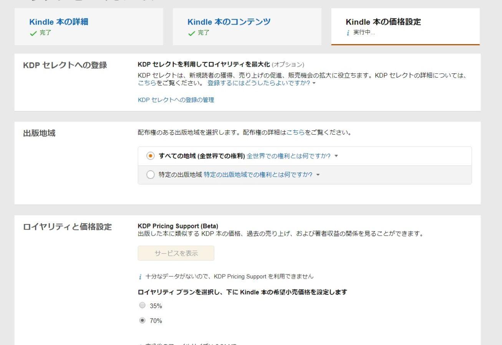
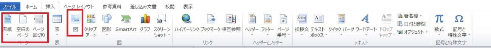

| Wordだけで本を出版する: マイクロソフトのWordを使って本の出版に挑戦する。 | |
| 土井 稔 | |
| (2018) | |
マイクロソフト の Wor d だけで本を出版する。
Wor dの PD F ファイル を JP G に変更する。
はじめに
本当に自分の本が出版できるのか非常に興味があったので、今回は、キンドルで電子出版することにしました。キンドル・ダイレクト・パブリッシング略してKDPを使います。
実際に出版するまでは、かなり難しい作業があるんだろうと思っていたのですが、結論からすると、自分の出したい本の原稿さへ出来ていれば、ほぼ一日でできてしまうことがわかりました。
あまりの簡単さにびっくりです。
最初に準備しておいた方がよいもの
とは言っても、最初に知っておいたほうがいいことがあります。それは、原稿文章の形式です。
キンドル・ダイレクト・パブリッシングKDPで使える文書形式は
MOBI、doc、docx、HTML、EPUB、RTF、プレーンテキスト、KPF
これだけの形式がありますが、私が一番使っているのがマイクロソフトのワードなのでこのまま使えたらいいなと思っていました。doc,とdocx,が使えるのでそのまま使えます。目次を作りたいときは、ワードの目次機能を使えばそのまま電子書籍の目次として使えます。
Word でサポートされているファイル形式
|
拡張子 |
ファイル形式の名称 |
|
doc |
Word 97-2003 文書 |
|
docx |
Word 文書
|
本の表紙は電子書籍の場合、表紙を見ての購入になるので本の売れ行きに大きく影響します。自分で作るには画像ファイルの形式と寸法を決めることになります。
画像の形式と寸法
画像のファイル形式はJPEG形式とTIFF形式の２つです。
寸法は、高さ２５６０ピクセル×幅１６００ピクセルで縦横の比率が1.6：１です。
画像の編集ソフトはたくさんあるので、何を使ってもいいのですが、ペイントやフォトショップ、GIMP,などいつも使っているもので大丈夫です。保存の時にJPEGに変更して保存すればできます。パワーポイントなんかも使えます。
アカウントの登録
原稿と表紙ができたら、本を出版する準備は完了です。ここからは、アカウントの登録と原稿のアップロードをします。
アマゾンが無料で提供してくれているKDP（キンドル・ダイレクト・パブリッシング）電子出版するためのページへ行きます。ＫＤＰで検索するとダイレクトパブリッシングのトップページがあります。
アマゾンのアカウントを持っていればサインインします。なければサインアップを押して作ってください。
サインインするとアカウント情報が不完全です。と表示されます。今すぐ更新をクリックして原稿料を受け取るための銀行口座番号などを入力してゆきます。
マイアカウントで住所・氏名・電話番号の入力。そして支払いの受け取り方法で銀行口座の追加をクリックして入力します。
世界中のマーケットプレースから入金になるのですが,日本の銀行に送金できないところは、小切手による受け取りができるので支払いの設定が完了していなくても いいえ をクリックしてください。
上のようにAmazon.com.brブラジルとAmazon.com.mxメキシコは小切手による支払いしかできないようです。
後は、税に関する情報や電子署名の同意と順次進めていけばＯＫです。
ちょっと気になるとこが、外国（米国以外）の納税者番号を持っている。にして外国（米国以外）のTINとしてマイナンバーを入力します。
これでキンドルのアカウントは登録できました。
ここまで出来ると下のような画面になり、原稿のアップロードやアップロードした原稿の変更や編集ができるようになっています。表紙の登録もここからできます。
ほとんどフェースブックの記事の投稿と同じです。タイトルの新規作成をクリックして原稿の保存先を指定するとアップロードできます。
少し詳しく説明します。
本をアップロードするには、大きく３つのパートに分かれています。
１．本の詳細
２．本のコンテンツ
３．本の価格設定
この３つに分かれています。
1. 本の詳細
順番に１．本の詳細では、本のタイトルや内容の紹介を記入します。
２．本のコンテンツ
本のコンテンツは原稿と表紙のアップロードです。
３．本の価格設定
３番目が本の価格設定です。

１．ここではKDPセレクトへの登録をするか？ しないか？の決定と
２．ロイヤリティを３５％にするか７０％にするかの選択
３．本の価格を９９円以上で決めることです。
この３点の選択はいつでも自由に変更できます。それぞれに色々な考えの中で自分で決めることになります。
私は、KDPセレクトに登録して、ロイヤリティを７０％にして、８ドル約８００円にしました。
ダイレクトパブリッシングの 本棚 管理画面で販売中になると、amazon.com（アマゾンドットコム）で自分の本を検索するとちゃんと出てきます。
Wor d を使って原稿を作成
それでは、マイクロソフトのWordを使って早速、原稿を作ってみます。Wordの使い方は大体のことはわかっている。ことを前提に話してゆきます。
Wordの使い方を最初から話していると、少し違う説明になってしまうので、特に原稿を書いていくうえで注意する点を説明します。
今回使うタブの場所
原稿を作っていくときに、特別に使うタブについて、先にまとめて紹介しておきます。
ホームのタブ
まず、ホームのタブ表示ですが、この赤で囲んだ部分が出ていることを確認してください。この見出し１、見出し２、見出し３を目次作成に使います
また、左側のナビゲーションの表示もあると便利です。
挿入のタブ

挿入のタブでは表紙、空白ページ、ページ区切り、図をよく使います。写真の挿入などはこの図から挿入します。
参考資料のタブ
普段のワード文書作成では、あまり使わない機能ですが、参考資料のタブで目次のところを使います。
ホーム、挿入、参考資料のタブが今回使うところです。
原稿の執筆と見出し
原稿の執筆はA4 でタイプしていきます。ひたすら頭の中にあるものをアウトプットしていく作業になるか？ それとも下書き保存していた原稿をタイプしていくことになるか？ 古い写真をスキャナーして取り込んでいくことになるのか？
結構時間のかかる作業だと思います。頑張ってください。あなたの作品が人の目に触れて、役に立ちたがっていることを意識すると、楽しい作業になるかもしれません。それに執筆していると、頭の中が整理されてきます。
文章の見出しとして、章（チャプター）や節（セクション）ごとに大きな字のところには見出しの設定をしてゆきます。見出しの種類はワードの場合、見出し１、見出し２、見出し３をそれぞれ付けます。それぞれ、大見出し、中見出し、小見出し、として機能します。
この、見出しを付けたところが目次になります。
見出しにしたいところの文章の最初のところにカーソルを持って行って、右上の見出し１から見出し４までの間で選びます。
目次の作成（自動で出来る）
見出しの設定ができていると、目次は自動でできます。
目次の作りたい場所までページを移動します。今回は、この文章の はじめに の前に目次を作りたいのでカーソルを はじめに の前にいて、参考資料の中の目次をクリックすると、
あら不思議、カーソルより上に目次ができます。ここで見出し１、見出し２、見出し３が自動的に判断されて表示されます。
ここで、目次を作る時の注意として、目次の挿入からポップアップ画面で詳細のチェックができます。
ページの番号は自動的に付けられるのですが、実際のページ数と合いません。なので、ここはチェックを外すほうが良いかと思います。
ページの番号の代わりにハイパーリンクを使うにはチェックを入れておくと、電子書籍の場合、見出しからすぐにページへ飛んでいけるので便利です。
本を見やすくするために
最後の仕上げになります。電子書籍の場合、ページが多くても少なくても問題がないので、出来るだけ改ページを入れて、紙面に余裕を持たせるほうが見やすくなります。
そんなことから、
挿入のタブからページの区切りを使ってセクションごとに区切りをつけると見やすいです。
表紙の作成
本の表紙なので大事なのですが、ワードでも作れます。表紙で必要なことは形式と寸法です。
１．画像のファイル形式はJPEG形式とTIFF形式の２つです。
２．寸法は、高さ２５６０ピクセル×幅１６００ピクセルで縦横の比率が1.6：１です。
この寸方は大体このぐらいという基準です。最近は1.5：１ぐらいが多くなっています。
表紙については、この２つを抑えておけば大丈夫です。
Wor d の挿入タブから表紙
それでは、早速作っていきましょう。
Wor d の中に表紙のテンプレートがあります。それが、挿入タブの表紙です。この中から適当なものを選んで、文章をタイプすると簡単に出来上がります。
このテンプレートで作ったのがこれです。
結構、簡単にできるのですが、テンプレートなので、あまりバリエーションがありません。
そして、何よりもファイル形式の jp g で保存できません。そこで 、 PD F ファイル を JP G に変換する必要があります。
Wor dの PD F ファイル を JP G に変更する。
仕方なく 、 PDF ファイルでいったん保存して、それ を JP G に変更します。
アドビー・リーダーなら大抵のパソコンに入っているので、そこから、この表紙 の PD F ファイルを開いて、先に作った表紙を出します。
そして、編集の中のスナップショットをクリックして画面全体をセクション選択します。すると、このような 選択した領域がコピーされました。となります。
これで、コピーができたので、ペイントに貼り付けて 、 JP G に変更して保存をすれば完成です。ちょうどプリントスクリーンを使うのと同じ方法です。
しかし、残念ながらこのまま使えません。寸法が少し足りません。
２．寸法は、高さ２５６０ピクセル×幅１６００ピクセルで縦横の比率が1.6：１です。
ここで、この大きさにするには、ペイントでサイズ変更してか ら JP G で保存します。
これで、本の表紙は完成します。
私のおすすめは、次に説明するペイントを使って表紙を作る方法です。知らない間にペイントが使いやすく進化しています。
ペイントを使って表紙を作る。
表紙を作るには、やっぱりフォトショップ や GIM P などを使って作るのかな？ と思ていないでしょうか。まてまて、ウィンドウズには最初からペイントというお絵かきソフトがあります。このペイントが進化しています。
このペイントだけで充分表紙ができるので、これを使ってみます。

じつは、知っている方も多いとは思いますが、ペイントには新しく ３D で編集する機能が加わっています。これを使います。
これが、ペイントで作った表紙です。
簡単に手順を説明します。
１． 写真をペイントで開いて、 ３D で編集するをクリック。
２． そして画像を表紙に合うように１．６：１の縦長にトリミングする。
３． 文字の挿入をしてゆきます。文字も ３D に出来ます。
いろいろ試してみると面白いです。
少し慣れるまで時間がかかりますが、いろいろと試していると、すぐに時間が過ぎてしまいます。
このペイントの使い方は、皆さんの楽しみとして省略します。
いよいよ、感動の瞬間です
原稿ができて、表紙ができると、いよいよ本の出版です。本の最初に戻って、アカウントの登録はできていますか？誤字、脱字はありませんか？
原稿をアップロードすると、アマゾンさんが校正をしてくれます。目次の設定があって、誤字等がなければ登録はされます。もしも問題があれば親切に訂正箇所の説明をしてくれます。
原稿と表紙のアップロードをしてください。

アップロードが完了すると、審査中になります。そして１日待つとメールが来ます。本の販売が開始されたことを知れせてくれます。
そして、ダイレクトパブリッシングの画面で販売中になります。
ここで、感動です 。 やったー
キンドルで本の確認をします。
できた本が実際に出版されて、本棚に並べられていることを確認したいですよね。
早速、キンドルで検索してみます。
本のタイトルを検索場所に記入すると。あなたの出版した本が出ています。
ここでも、感動します。
当然、自分の本なので購入します。
ゲゲゲ 読んでいると間違いではないが、気になるところや言い回し、ページ送りなどが気になってきます。表紙なんかも少し手直ししたいところが出てきます。
でも、心配いりません。ワードで作った原稿を直して再度登録できます。

KD P キンドルダイレクトパブリッシングの管理画面で一番右の ... . のところをクリックするとコンテンツの編集ができます。
ここから、再度全部の原稿を登録します。これで、気になった点も解消します。最初に登録した時と同じように、メールで変更できたことを知らせてくれます。有難いです。
あとがき
本当に便利になりました。本を出版するのに費用は掛からず、しかも、いつも使っているマイクロソフト の Wor d で原稿ができて、しかもペイントで表紙まで簡単にできてしまう。
こんなことは、思ってもみませんでした。しかも、私はアイパッド （ iPa d ）を持ち歩いているので、どこでも原稿を書くことができます。当然のようにアイパッドの中に は Wor d が無料のアプリとしてあります。
今回、紹介したペイント も 3 D 編集ができてしまいます。しかも簡単に！
写真集や趣味の絵ハガキや、お料理のレシピや、コレクションなどなど好きなものを本にして楽しんでください。
どこかで、お会いできることを楽しみにしています 。 Doi555.com